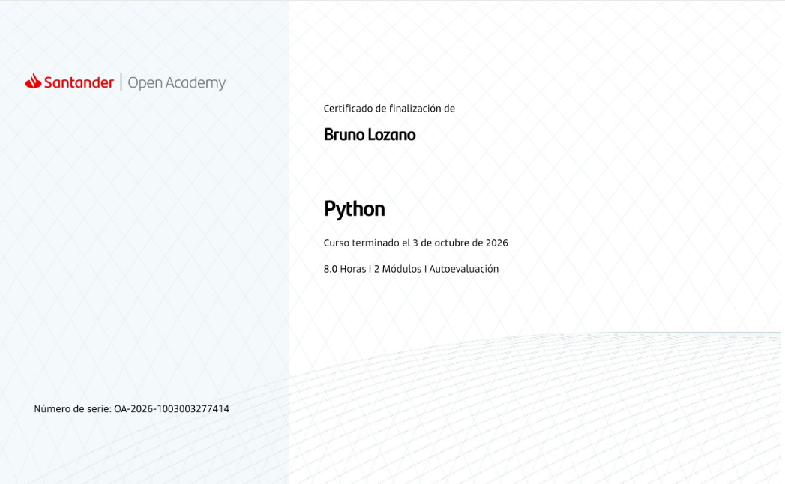
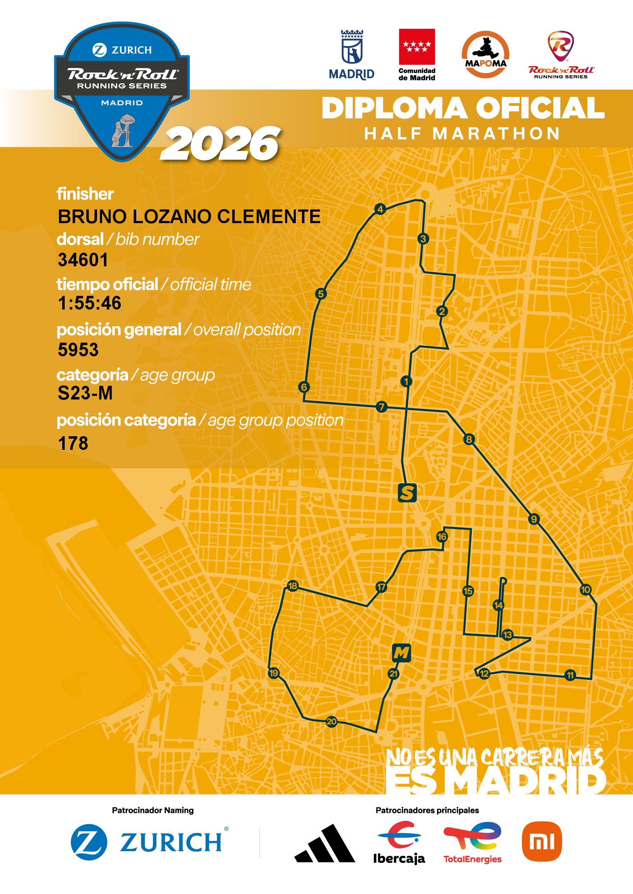

Software · Hardware · IA
Bruno Lozano Clemente
Explorando nuevas formas de interactuar con la tecnología.
Soy Bruno, un entusiasta de la tecnología. Aquí podrás descubrir mis proyectos, habilidades y aficiones. Te invito a acompañarme en este apasionante mundo de la informática.
Analiza, fija un objetivo y alcánzalo.
Acerca de mí
Soy Bruno, estudiante de último año de Ingeniería de Computadores en la Universidad Complutense de Madrid. Tengo un gran interés tanto en el desarrollo hardware como software. Además, me apasionan áreas como el desarrollo web, la robótica, la programación a bajo nivel y la Inteligencia Artificial.
Cuento con un nivel intermedio y consolidado de inglés que me permite consultar documentación técnica y comunicarme de forma efectiva. Disfruto mucho aprendiendo el idioma y dedico tiempo de forma proactiva para dominarlo.
Fuera de la pantalla, soy apasionado del deporte. Preparar y completar una media maratón me ha enseñado que los grandes retos necesitan de constancia, responsabilidad, compromiso y capacidad analítica.
Actualmente me encuentro en búsqueda de una empresa donde realizar prácticas curriculares, adentrarme al mundo laboral y aplicar lo aprendido en un entorno real, mientras continúo con mi formación académica.
Contacto
Ubicación
Madrid, España
Teléfono
+34 678 38 25 45
Correo electrónico
brunolocle@gmail.com
LinkedIn
Bruno Lozano Clemente
GitHub
brunoloz
Aptitudes
Habilidades
Idiomas
Proyectos
Match4ll
Desarrollé durante cuatro meses, colaborando en un equipo de tres estudiantes, una aplicación web para la gestión de competiciones y equipos de fútbol utilizando Java y Spring Boot. Participé en el desarrollo y en su despliegue en un entorno de contenedores basado en Docker, utilizando Apache Guacamole.
- Java
- Spring Boot
- JavaScript
- HTML
- CSS
- Docker
Manta ReyBot
Desarrollé en C un robot móvil autónomo sobre una Raspberry Pi 3, integrando sensores CNY70 y GP2Y0A41SK0F para implementar seguimiento de línea y detección/evasión de obstáculos.
- C
- Raspberry Pi 3
- CNY70/GP2Y0A41SK0F
Simulador de Tráfico
Desarrollé en Java un simulador de tráfico basado en eventos, con interfaz gráfica Swing y arquitectura MVC. Simula cruces, carreteras, vehículos, semáforos y cambios en el clima y la contaminación.
- Java
- Swing
- MVC
Parquímetro suizo
Implementé en C un sistema de gestión para un parquímetro, utilizando UART y emulación de hardware para gestionar plazas numeradas, controlar el tiempo de estacionamiento y procesar pagos.
- C
- RISC-V
- UART
Títulos y certificaciones
2026
Introducción a la programación con Python
Santander Open Academy
Realizado en octubre de 2026
Ver certificación
Otros logros
2026
Finisher de media maratón
Rock 'n' Roll Running Series Madrid
Tiempo oficial: 1:55:46
Ver diploma